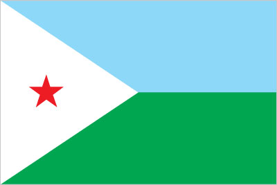
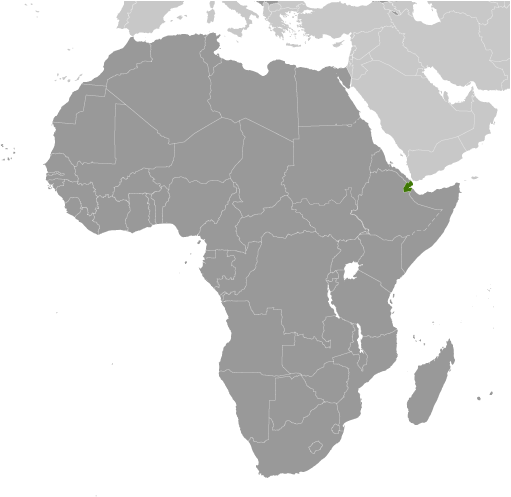
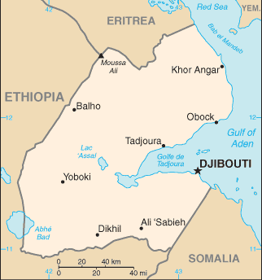

Africa :: DJIBOUTI
Introduction :: DJIBOUTI
-
The French Territory of the Afars and the Issas became Djibouti in 1977. Hassan Gouled APTIDON installed an authoritarian one-party state and proceeded to serve as president until 1999. Unrest among the Afar minority during the 1990s led to a civil war that ended in 2001 with a peace accord between Afar rebels and the Somali Issa-dominated government. In 1999, Djibouti's first multiparty presidential election resulted in the election of Ismail Omar GUELLEH as president; he was reelected to a second term in 2005 and extended his tenure in office via a constitutional amendment, which allowed him to serve a third term in 2011 and begin a fourth term in 2016. Djibouti occupies a strategic geographic location at the intersection of the Red Sea and the Gulf of Aden and serves as an important shipping portal for goods entering and leaving the east African highlands and transshipments between Europe, the Middle East, and Asia. The government holds longstanding ties to France, which maintains a significant military presence in the country, and has strong ties with the US. Djibouti hosts several thousand members of US armed services at US-run Camp Lemonnier.
Geography :: DJIBOUTI
-
Eastern Africa, bordering the Gulf of Aden and the Red Sea, between Eritrea and Somalia11 30 N, 43 00 EAfricatotal: 23,200 sq kmland: 23,180 sq kmwater: 20 sq kmcountry comparison to the world: 151slightly smaller than New Jerseytotal: 528 kmborder countries (3): Eritrea 125 km, Ethiopia 342 km, Somalia 61 km314 kmterritorial sea: 12 nmcontiguous zone: 24 nmexclusive economic zone: 200 nmdesert; torrid, drycoastal plain and plateau separated by central mountainsmean elevation: 430 melevation extremes: lowest point: Lac Assal -155 mhighest point: Moussa Ali 2,021 mpotential geothermal power, gold, clay, granite, limestone, marble, salt, diatomite, gypsum, pumice, petroleumagricultural land: 73.4%arable land 0.1%; permanent crops 0%; permanent pasture 73.3%forest: 0.2%other: 26.4% (2011 est.)10 sq km (2012)most densely populated areas are in the east; the largest city is Djibouti, with a population over 600,000; no other city in the country has a total population over 50,000earthquakes; droughts; occasional cyclonic disturbances from the Indian Ocean bring heavy rains and flash floodsvolcanism: experiences limited volcanic activity; Ardoukoba (298 m) last erupted in 1978; Manda-Inakir, located along the Ethiopian border, is also historically activeinadequate supplies of potable water; limited arable land; desertification; endangered speciesparty to: Biodiversity, Climate Change, Climate Change-Kyoto Protocol, Desertification, Endangered Species, Hazardous Wastes, Law of the Sea, Ozone Layer Protection, Ship Pollution, Wetlandssigned, but not ratified: none of the selected agreementsstrategic location near world's busiest shipping lanes and close to Arabian oilfields; terminus of rail traffic into Ethiopia; mostly wasteland; Lac Assal (Lake Assal) is the lowest point in Africa and the saltiest lake in the world
People and Society :: DJIBOUTI
-
865,267 (July 2017 est.)country comparison to the world: 162noun: Djiboutian(s)adjective: DjiboutianSomali 60%, Afar 35%, other 5% (includes French, Arab, Ethiopian, and Italian)French (official), Arabic (official), Somali, AfarMuslim 94%, Christian 6%Djibouti is a poor, predominantly urban country, characterized by high rates of illiteracy, unemployment, and childhood malnutrition. More than 75% of the population lives in cities and towns (predominantly in the capital, Djibouti). The rural population subsists primarily on nomadic herding. Prone to droughts and floods, the country has few natural resources and must import more than 80% of its food from neighboring countries or Europe. Health care, particularly outside the capital, is limited by poor infrastructure, shortages of equipment and supplies, and a lack of qualified personnel. More than a third of health care recipients are migrants because the services are still better than those available in their neighboring home countries. The nearly universal practice of female genital cutting reflects Djibouti’s lack of gender equality and is a major contributor to obstetrical complications and its high rates of maternal and infant mortality. A 1995 law prohibiting the practice has never been enforced.Because of its political stability and its strategic location at the confluence of East Africa and the Gulf States along the Gulf of Aden and the Red Sea, Djibouti is a key transit point for migrants and asylum seekers heading for the Gulf States and beyond. Each year some hundred thousand people, mainly Ethiopians and some Somalis, journey through Djibouti, usually to the port of Obock, to attempt a dangerous sea crossing to Yemen. However, with the escalation of the ongoing Yemen conflict, Yemenis began fleeing to Djibouti in March 2015, with almost 20,000 arriving by August 2017. Most Yemenis remain unregistered and head for Djibouti City rather than seeking asylum at one of Djibouti’s three spartan refugee camps. Djibouti has been hosting refugees and asylum seekers, predominantly Somalis and lesser numbers of Ethiopians and Eritreans, at camps for 20 years, despite lacking potable water, food shortages, and unemployment.0-14 years: 31.14% (male 135,151/female 134,312)15-24 years: 21.32% (male 86,820/female 97,656)25-54 years: 39.03% (male 140,242/female 197,484)55-64 years: 4.75% (male 18,593/female 22,515)65 years and over: 3.76% (male 14,559/female 17,935) (2017 est.)total dependency ratio: 56.5youth dependency ratio: 50.1elderly dependency ratio: 6.4potential support ratio: 15.6 (2015 est.)total: 23.9 yearsmale: 22.1 yearsfemale: 25.3 years (2017 est.)country comparison to the world: 1662.16% (2017 est.)country comparison to the world: 3723.4 births/1,000 population (2017 est.)country comparison to the world: 647.5 deaths/1,000 population (2017 est.)country comparison to the world: 1085.7 migrant(s)/1,000 population (2017 est.)country comparison to the world: 20most densely populated areas are in the east; the largest city is Djibouti, with a population over 600,000; no other city in the country has a total population over 50,000urban population: 77.5% of total population (2017)rate of urbanization: 1.52% annual rate of change (2015-20 est.)DJIBOUTI (capital) 529,000 (2015)at birth: 1.03 male(s)/female0-14 years: 1.01 male(s)/female15-24 years: 0.89 male(s)/female25-54 years: 0.71 male(s)/female55-64 years: 0.85 male(s)/female65 years and over: 0.82 male(s)/femaletotal population: 0.84 male(s)/female (2016 est.)229 deaths/100,000 live births (2015 est.)country comparison to the world: 46total: 45.8 deaths/1,000 live birthsmale: 52.6 deaths/1,000 live birthsfemale: 38.8 deaths/1,000 live births (2017 est.)country comparison to the world: 39total population: 63.6 yearsmale: 61 yearsfemale: 66.2 years (2017 est.)country comparison to the world: 1912.31 children born/woman (2017 est.)country comparison to the world: 8919% (2012)10.6% of GDP (2014)country comparison to the world: 170.23 physicians/1,000 population (2014)1.4 beds/1,000 population (2012)improved:urban: 97.4% of populationrural: 64.7% of populationtotal: 90% of populationunimproved:urban: 2.6% of populationrural: 35.3% of populationtotal: 10% of population (2015 est.)improved:urban: 59.8% of populationrural: 5.1% of populationtotal: 47.4% of populationunimproved:urban: 40.2% of populationrural: 94.9% of populationtotal: 52.6% of population (2015 est.)1.3% (2016 est.)country comparison to the world: 378,600 (2016 est.)country comparison to the world: 98<1000 (2016 est.)degree of risk: highfood or waterborne diseases: bacterial and protozoal diarrhea, hepatitis A, and typhoid fevervectorborne disease: dengue fever (2016)13.5% (2016)country comparison to the world: 13129.8% (2012)country comparison to the world: 144.5% of GDP (2010)country comparison to the world: 11total: 6 yearsmale: 7 yearsfemale: 6 years (2011)
Government :: DJIBOUTI
-
conventional long form: Republic of Djibouticonventional short form: Djiboutilocal long form: Republique de Djibouti/Jumhuriyat Jibutilocal short form: Djibouti/Jibutiformer: French Territory of the Afars and Issas, French Somalilandetymology: the country name derives from the capital city of Djiboutisemi-presidential republicname: Djiboutigeographic coordinates: 11 35 N, 43 09 Etime difference: UTC+3 (8 hours ahead of Washington, DC, during Standard Time)6 districts (cercles, singular - cercle); Ali Sabieh, Arta, Dikhil, Djibouti, Obock, Tadjourah27 June 1977 (from France)Independence Day, 27 June (1977)history: approved by referendum 4 September 1992amendments: proposed by the president of the republic or by the National Assembly; Assembly consideration of proposals requires assent by at least one-third of the membership; passage requires a simple majority vote by the Assembly and approval by simple majority vote in a referendum; the president can opt to bypass a referendum if adopted by at least two-thirds majority vote of the Assembly; constitutional articles on the sovereignty of Djibouti, its republican form of government, and its pluralist form of democracy cannot by amended; amended 2006, 2008, 2010 (2017)mixed legal system based primarily on the French civil code (as it existed in 1997), Islamic religious law (in matters of family law and successions), and customary lawaccepts compulsory ICJ jurisdiction with reservations; accepts ICCt jurisdictioncitizenship by birth: nocitizenship by descent only: the mother must be a citizen of Djiboutidual citizenship recognized: noresidency requirement for naturalization: 10 years18 years of age; universalchief of state: President Ismail Omar GUELLEH (since 8 May 1999)head of government: Prime Minister Abdoulkader Kamil MOHAMED (since 1 April 2013)cabinet: Council of Ministers appointed by the prime ministerelections/appointments: president directly elected by absolute majority popular vote in 2 rounds if needed for a 5-year term; (constitution amended in 2010 to allow a third term); election last held on 8 April 2016 (next to be held by 2021); prime minister appointed by the presidentelection results: Ismail Omar GUELLEH reelected president for a fourth term; percent of vote - Ismail Omar GUELLEH (RPP) 87%, Omar Elmi KHAIREH (CDU) 7.3%, other 5.6%description: unicameral National Assembly or Assemblee Nationale, formerly the Chamber of Deputies (65 seats; 52 members directly elected in multi-seat constituencies by simple majority vote and 13 directly elected in multi-seat constituencies by proportional representation vote; members serve 5-year terms)elections: last held on 22 February 2013 (next to be held in 2018)election results: percent of vote by party - UMP 61.5%, USN 35.6%, CDU 3%; seats by party - UMP 43, USN 21, CDU 1highest court(s): Supreme Court or Cour Supreme (consists of NA magistrates); Constitutional Council (consists of 6 magistrates)judge selection and term of office: Supreme Court magistrates appointed by the president with the advice of the Superior Council of the Magistracy or CSM, a 10-member body consisting of 4 judges, 3 members (non parliamentarians and judges) appointed by the president, and 3 appointed by the National Assembly president or speaker; magistrates appointed for life with retirement at age 65; Constitutional Council magistrate appointments - 2 by the president of the republic, 2 by the president of the National Assembly, and 2 by the CSM; magistrates appointed for 8-year, non-renewable termssubordinate courts: High Court of Appeal; 5 Courts of First Instance; customary courts; State Court (replaced sharia courts in 2003)Center for United Democrats or CDU [Omar Elmi KHAIREH, chairman]Democratic Renewal Party or PRD [Abdillahi HAMARITEH]Djibouti Development Party or PDD [Mohamed Daoud CHEHEM]Front for Restoration of Unity and Democracy (Front pour la Restauration de l'Unite Democratique) or FRUD [Ali Mohamed DAOUD]Movement for Democratic Renewal and Development [Daher Ahmed FARAH]Movement for Development and Liberty or MODEL [Ismail Ahmed WABERI]National Democratic Party or PND [Aden Robleh AWALEH]People's Rally for Progress or RPP [Ismail Omar GUELLEH] (governing party)Peoples Social Democratic Party or PPSD [Hasna Moumin BAHDON]Republican Alliance for Democracy or ARDUnion for a Presidential Majority or UMP (a coalition of parties including RPP, FRUD, PND, and PPSD)Union for Democracy and Justice or UDJ [Ilya Ismail GUEDI Hared]Union for National Salvation or USN [Ahmed Youssouf HOUMED] (coalition includes ARD, MoDel, MRD, PDD, PND, UDJ)ACP, AfDB, AFESD, AMF, AU, CAEU (candidates), COMESA, FAO, G-77, IBRD, ICAO, ICCt, ICRM, IDA, IDB, IFAD, IFC, IFRCS, IGAD, ILO, IMF, IMO, Interpol, IOC, IOM, IPU, ITU, ITUC (NGOs), LAS, MIGA, MINURSO, NAM, OIC, OIF, OPCW, UN, UNCTAD, UNESCO, UNHCR, UNIDO, UNWTO, UPU, WCO, WFTU (NGOs), WHO, WIPO, WMO, WTOchief of mission: Ambassador (vacant); Charge D’Affaires Mark BOULWARE (since February 2017)chancery: 1156 15th Street NW, Suite 515, Washington, DC 20005telephone: [1] (202) 331-0270FAX: [1] (202) 331-0302chief of mission: Ambassador (vacant); Charge d'Affaires J. Alexander HAMILTON (since 23 June 2017)embassy: Lot 350-B, Haramoussmailing address: B.P. 185, Djiboutitelephone: [253] 21 45 30 00FAX: [253] 21 45 31 29two equal horizontal bands of light blue (top) and light green with a white isosceles triangle based on the hoist side bearing a red five-pointed star in the center; blue stands for sea and sky and the Issa Somali people; green symbolizes earth and the Afar people; white represents peace; the red star recalls the struggle for independence and stands for unityred star; national colors: light blue, green, white, redname: "Jabuuti" (Djibouti)lyrics/music: Aden ELMI/Abdi ROBLEHnote: adopted 1977
Economy :: DJIBOUTI
-
Djibouti's economy is based on service activities connected with the country's strategic location as a deepwater port on the Red Sea. Three-fourths of Djibouti's inhabitants live in the capital city; the remainder are mostly nomadic herders. Scant rainfall and less than 4% arable land limits crop production to small quantities of fruits and vegetables, and most food must be imported.Djibouti provides services as both a transit port for the region and an international transshipment and refueling center. Imports, exports, and reexports represent 70% of port activity at Djibouti's container terminal. Reexports consist primarily of coffee from landlocked neighbor Ethiopia. Djibouti has few natural resources and little industry. The nation is, therefore, heavily dependent on foreign assistance to support its balance of payments and to finance development projects. An official unemployment rate of nearly 50% - with youth unemployment near 80% - continues to be a major problem. Inflation was a modest 3% in 2014-2016, due to low international food prices and a decline in electricity tariffs.Djibouti’s reliance on diesel-generated electricity and imported food and water leave average consumers vulnerable to global price shocks, though in mid-2015 Djibouti passed new legislation to liberalize the energy sector. The government has emphasized infrastructure development for transportation and energy and Djibouti – with the help of foreign partners, particularly China – has begun to increase and modernize its port capacity.$3.344 billion (2016 est.)$3.1 billion (2015 est.)$2.88 billion (2014 est.)note: data are in 2016 dollarscountry comparison to the world: 183$1.889 billion (2016 est.)6.5% (2016 est.)6.5% (2015 est.)6% (2014 est.)country comparison to the world: 19$3,400 (2016 est.)$3,300 (2015 est.)$3,100 (2014 est.)note: data are in 2016 dollarscountry comparison to the world: 18616.9% of GDP (2016 est.)19% of GDP (2015 est.)9.8% of GDP (2014 est.)country comparison to the world: 12household consumption: 56.4%government consumption: 33.8%investment in fixed capital: 39.2%investment in inventories: 0.3%exports of goods and services: 36.2%imports of goods and services: -65.9% (2016 est.)agriculture: 2.9%industry: 20.8%services: 76.3% (2016 est.)fruits, vegetables; goats, sheep, camels, animal hidesconstruction, agricultural processing, shipping4.7% (2016 est.)country comparison to the world: 49294,600 (2012)country comparison to the world: 164agriculture: NA%industry: NA%services: NA%60% (2014 est.)48.4% (2012 est.)country comparison to the world: 21523%note: percent of population below $1.25 per day at purchasing power parity (2015 est.)lowest 10%: 2.4%highest 10%: 30.9% (2002)40.9 (2002)country comparison to the world: 56revenues: $613.8 millionexpenditures: $917.7 million (2016 est.)32.4% of GDP (2016 est.)country comparison to the world: 67-16% of GDP (2016 est.)country comparison to the world: 21231.3% of GDP (2016 est.)33.7% of GDP (2015 est.)country comparison to the world: 159calendar year2.7% (2016 est.)-0.8% (2015 est.)country comparison to the world: 13511.45% (31 December 2016 est.)11.62% (31 December 2015 est.)country comparison to the world: 71$1.323 billion (31 December 2016 est.)$1.182 billion (31 December 2015 est.)country comparison to the world: 146$1.652 billion (31 December 2016 est.)$1.572 billion (31 December 2015 est.)country comparison to the world: 161$639.9 million (31 December 2016 est.)$597.6 million (31 December 2015 est.)country comparison to the world: 172$-575 million (2016 est.)$-547.8 million (2015 est.)country comparison to the world: 99$139.9 million (2016 est.)$133.6 million (2015 est.)country comparison to the world: 191reexports, hides and skins, coffee (in transit), scrap metalEthiopia 39%, Somalia 17.8%, Qatar 9.4%, Brazil 9.1%, Yemen 5.1% (2016)$1.128 billion (2016 est.)$1.08 billion (2015 est.)country comparison to the world: 178foods, beverages, transport equipment, chemicals, petroleum products, clothingUAE 25.8%, France 16.4%, China 10.4%, Saudi Arabia 8.4%, Ethiopia 7%, Yemen 4.8% (2016)$1.519 billion (31 December 2016 est.)$1.222 billion (31 December 2015 est.)country comparison to the world: 157$1.483 billion (31 December 2016 est.)$1.084 billion (31 December 2015 est.)country comparison to the world: 116Djiboutian francs (DJF) per US dollar -177.72 (2016 est.)177.72 (2015 est.)177.72 (2014 est.)177.72 (2013 est.)177.72 (2012 est.)
Energy :: DJIBOUTI
-
population without electricity: 400,000electrification - total population: 50%electrification - urban areas: 61%electrification - rural areas: 14% (2013)405 million kWh (2015 est.)country comparison to the world: 172376.7 million kWh (2015 est.)country comparison to the world: 1760 kWh (2016 est.)country comparison to the world: 1290 kWh (2016 est.)country comparison to the world: 142130,000 kW (2015 est.)country comparison to the world: 174100% of total installed capacity (2015 est.)country comparison to the world: 50% of total installed capacity (2015 est.)country comparison to the world: 780% of total installed capacity (2015 est.)country comparison to the world: 1730% of total installed capacity (2015 est.)country comparison to the world: 1780 bbl/day (2016 est.)country comparison to the world: 1260 bbl/day (2014 est.)country comparison to the world: 1140 bbl/day (2014 est.)country comparison to the world: 1180 bbl (1 January 2017 es)country comparison to the world: 1260 bbl/day (2014 est.)country comparison to the world: 1356,000 bbl/day (2015 est.)country comparison to the world: 169402.7 bbl/day (2014 est.)country comparison to the world: 1136,509 bbl/day (2014 est.)country comparison to the world: 1560 cu m (2013 est.)country comparison to the world: 1270 cu m (2013 est.)country comparison to the world: 1750 cu m (2013 est.)country comparison to the world: 930 cu m (2013 est.)country comparison to the world: 1170 cu m (1 January 2014 es)country comparison to the world: 1321.8 million Mt (2013 est.)country comparison to the world: 151
Communications :: DJIBOUTI
-
total subscriptions: 24,925subscriptions per 100 inhabitants: 3 (July 2016 est.)country comparison to the world: 181total: 345,246subscriptions per 100 inhabitants: 41 (July 2016 est.)country comparison to the world: 177general assessment: telephone facilities in the city of Djibouti are adequate, as are the microwave radio relay connections to outlying areas of the countrydomestic: Djibouti Telecom is the sole provider of telecommunications services and utilizes mostly a microwave radio relay network; fiber-optic cable is installed in the capital; rural areas connected via wireless local loop radio systems; mobile cellular coverage is primarily limited to the area in and around Djibouti cityinternational: country code - 253; landing point for the SEA-ME-WE-3 and EASSy fiber-optic submarine cable systems providing links to Asia, the Middle East, Europe and North America; satellite earth stations - 2 (1 Intelsat - Indian Ocean and 1 Arabsat); Medarabtel regional microwave radio relay telephone network (2015)state-owned Radiodiffusion-Television de Djibouti operates the sole terrestrial TV station, as well as the only 2 domestic radio networks; no private TV or radio stations; transmissions of several international broadcasters are available (2007).djtotal: 111,212percent of population: 13.1% (July 2016 est.)country comparison to the world: 178
Transportation :: DJIBOUTI
-
number of registered air carriers: 2inventory of registered aircraft operated by air carriers: 4 (2015)J2 (2016)13 (2013)country comparison to the world: 152total: 3over 3,047 m: 12,438 to 3,047 m: 11,524 to 2,437 m: 1 (2017)total: 101,524 to 2,437 m: 1914 to 1,523 m: 7under 914 m: 2 (2013)total: 97 km (Djibouti segment of the 756 km Addis Ababa-Djibouti railway)standard gauge: 97 km 1.435-m gauge (2017)country comparison to the world: 128total: 3,065 kmpaved: 1,379 kmunpaved: 1,686 km (2000)country comparison to the world: 165major seaport(s): Djibouti
Military and Security :: DJIBOUTI
-
Djibouti Armed Forces (Forces Armees Djiboutiennes, FAD): Djibouti National Army (includes Navy, Djiboutian Air Force (Force Aerienne Djiboutienne, FAD), National Gendarmerie (GN)) (2013)18 years of age for voluntary military service; 16-25 years of age for voluntary military training; no conscription (2012)while attacks continued to decrease, the International Maritime Bureau reports offshore waters in the Red Sea and Gulf of Aden remain a high risk for piracy; the presence of several naval task forces in the Gulf of Aden and additional anti-piracy measures on the part of ship operators, including the use of on-board armed security teams, contributed to the drop in incidents; there were no incidents in the Red Sea in 2016, however one ship was fired upon during the first half of 2017; Operation Ocean Shield, the NATO/EUNAVFOR naval task force established in 2009 to combat Somali piracy, concluded its operations in December 2016 as a result of the drop in reported incidents over the last few years
Transnational Issues :: DJIBOUTI
-
Djibouti maintains economic ties and border accords with "Somaliland" leadership while maintaining some political ties to various factions in Somalia; Kuwait is chief investor in the 2008 restoration and upgrade of the Ethiopian-Djibouti rail link; in 2008, Eritrean troops moved across the border on Ras Doumera peninsula and occupied Doumera Island with undefined sovereignty in the Red Searefugees (country of origin): 13,021 (Somalia) (2016); 19,636 (Yemen) (2017)current situation: Djibouti is a transit, source, and destination country for men, women, and children subjected to forced labor and sex trafficking; economic migrants from East Africa en route to Yemen and other Middle East locations are vulnerable to exploitation in Djibouti; some women and girls may be forced into domestic servitude or prostitution after reaching Djibouti City, the Ethiopia-Djibouti trucking corridor, or Obock – the main crossing point into Yemen; Djiboutian and foreign children may be forced to beg, to work as domestic servants, or to commit theft and other petty crimestier rating: Tier 2 Watch List – Djibouti does not fully comply with the minimum standards for the elimination of trafficking; however, it is making significant efforts to do so; in 2014, Djibouti was granted a waiver from an otherwise required downgrade to Tier 3 because its government has a written plan that, if implemented would constitute making significant efforts to bring itself into compliance with the minimum standards for the elimination of trafficking; one forced labor trafficker was convicted in 2014 but received a suspended sentence inadequate to deter trafficking; authorities did not investigate or prosecute any other forced labor crimes, any sex trafficking offenses, or any officials complicit in human trafficking, and remained limited in their ability to recognize or protect trafficking victims; official round-ups, detentions, and deportations of non-Djiboutian residents, including children without screening for trafficking victims remained routine; the government did not provide care to victims but supported local NGOs operating centers that assisted victims (2015)